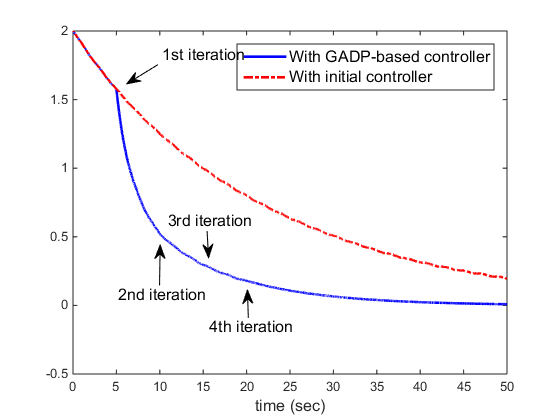
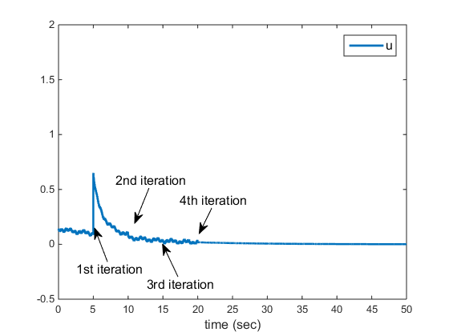
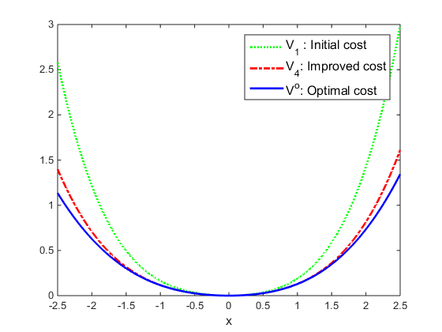
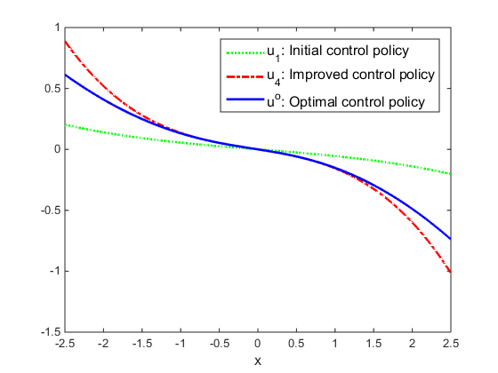

Contents
function SimResults = Ch4Ex2_main()
GADP for a scalar polynomial system
Demo #1 for Global Adaptive Dynamic Programming for Continuous-time Nonlinear Systems, by Yu Jiang and Zhong-Ping Jiang, IEEE Transasctions on Automatic Control, 2015
This paper can be found at 1. http://ieeexplore.ieee.org/xpl/articleDetails.jsp?arnumber=7063901 2. http://arxiv.org/pdf/1401.0020.pdf
System requirements: - MATLAB (Manually Tested in MATLAB R2014b) - MATLAB Symbolic Toolbox - CVX (free to download at http://cvxr.com/cvx/)
Copyright 2015 Yu Jiang
Contact: yu.jiang@nyu.edu (Yu Jiang)
Setting parameters
Parameters for Simulation the dynamic system
SysParams.Q = 0.01*[1 0 0;0 1 0;0 0 0]; % The cost function will be % ([x]_{1,3})'*Q*[x]_{1,3}+u^2 SysParams.noiseFlag = true; % Inicator for noise on/off SysParams.K = [0.1 0 0.01]; % Initial feeback gain matrix SysParams.F = [0 0.01 0]; % System dynamics dx = F*[x]_1,3 + u, % F is not used in Online Policy Iteration SysParamsInit = SysParams; % Make a copy of initial parameters % Parameters for learning Params.iter_tol = 0.007; Params.T = 0.1; % Length of each time interval for data collection Params.MaxIter = 10; % Maximum iteration numbers Params.IterInterval = 5; % Length of each time interval for learning Params.xinit = 2; % Initial condition for the actual state x % Other params x = [Params.xinit;zeros(9,1)]'; % Initial condition for the augmented x P = eye(2)*10; % Initialize V_0: ([x]_{1,2})'*P*[x]_{1,2} Pold = -100*eye(2); % Initialize V_{-1} % Simulation results to export SimResults.Ksave = SysParams.K; % Keep track of the feedback gains SimResults.Psave = P(:)'; % Keep track of the value function SimResults.Usave = []; % Actual control signal during simulation SimResults.Xsave=[]; % Actual x(t) during simulation SimResults.Tsave=[]; % Sample time points during simulation % caculate the weights for V c = LocalComputeObjective(-1, 1);
Start online simulation
for i = 0:Params.MaxIter-1 % Data collection Theta = [];Sigma = []; Xi = []; % Data matrices for online learning for j = 0:Params.IterInterval/Params.T-1 [t,x] = ode45(@(t,x) SystemWrapper(t,x,SysParams), ... [j,j+1]*Params.T + i*Params.IterInterval, ... [x(end,1) zeros(1,9)]); Theta = [Theta; (x(end,1)^2-x(1,1)^2) (x(end,1)^3-x(1,1)^3) (x(end,1)^4-x(1,1)^4)]; Sigma = [Sigma; x(end,2:6) -x(end,7:9)]; Xi = [Xi; x(end,10)]; SimResults.Tsave = [SimResults.Tsave;t]; SimResults.Xsave = [SimResults.Xsave;x(:,1)]; for k=1:length(t) SimResults.Usave = [SimResults.Usave; LocalComputeControlSignal(x(k,1),SysParams.K,... SysParams.noiseFlag,t(k))]; end end % SOS-based Online Policy iteration if norm(P(:)-Pold(:)) > Params.iter_tol % Calling local function for policy improvement and policy % evaluation. Notice that we do not pass in the systen dynamics, % i.e, the F vector. Because online learning does not rely on it. [Pn,K] = LocalOnlinePI(Sigma,Xi,Theta,... % Data matrices collected online c, ... % weights P); % previous value function Pold = P; P = Pn; % Save the current and the old P SysParams.noiseFlag = true; SysParams.K = K; SimResults.Ksave = [SimResults.Ksave; K(:)']; SimResults.Psave = [SimResults.Psave; P(:)']; % Qlave=[Qlave;dQl(:)']; else SysParams.noiseFlag = false; disp('Convergence has been attained ...update is not necessary') end end
Post-process and plot results
SimResults.hFigs = LocalPostProcess(SysParams, SysParamsInit, ...
SimResults,Params, P);
    end
LocalPostProcess: Process results and generate figures
function hFigs = LocalPostProcess(SysParams, SysParamsInit,SimResults, Params, P) % Figure 1: % Comparison of x between GADP and unlearned system hFig1 = figure(1); [t0,y0] = ode45(@(t,x) SystemWrapper(t,x,SysParamsInit),... [0 50], ... [Params.xinit, zeros(1,9)]); y0 = y0(:,1); % Only need the first column for the actual x for i=1:length(t0) u0(i) = SysParamsInit.K * y0(i).^[1 2 3]'; % Unleared controller end plot(SimResults.Tsave, SimResults.Xsave, 'b-', ... % Learned t0,y0, 'r-.', ... % Unlearned 'linewidth', 2) axis([0 50 -.5 2]) myLegend = legend('With GADP-based controller', 'With initial controller'); set(myLegend, 'Fontsize', 12); xlabel('time (sec)', 'FontSize', 12) %ylabel('x', 'FontSize', 12) % Create textarrows annotation(hFig1,'textarrow', ... [0.281132075471698 0.226415094339623],... [0.845386533665835 0.800498753117207],'TextEdgeColor','none',... 'FontSize',12,... 'String',{'1st iteration'}); annotation(hFig1,'textarrow',... [0.443396226415094 0.44188679245283],... [0.244389027431421 0.309127182044887],'TextEdgeColor','none',... 'FontSize',12,... 'String',{'4th iteration'}); annotation(hFig1,'textarrow',... [0.369811320754717 0.372452830188679],... [0.448877805486284 0.386334164588527],'TextEdgeColor','none',... 'FontSize',12,... 'String',{'3rd iteration'}); annotation(hFig1,'textarrow',... [0.284905660377358 0.286037735849057],... [0.321695760598504 0.416408977556109],'TextEdgeColor','none', ... 'FontSize',12,... 'String',{'2nd iteration'}); % Figure 2 hFig2 = figure(2); plot(SimResults.Tsave, SimResults.Usave,'Linewidth',2) myLegend = legend('u'); set(myLegend, 'FontSize', 12); xlabel('time (sec)', 'FontSize', 12) axis([0 50 -0.5 2]); % Create textarrows annotation(hFig2 ,'textarrow',[0.239092495636998 0.2107082880569],... [0.221748400852878 0.320754616656652],'TextEdgeColor','none', ... 'FontSize',12,... 'String',{'1st iteration'}); annotation(hFig2 ,'textarrow',[0.396160558464223 0.361981626000198],... [0.176972281449893 0.27332776800004],'TextEdgeColor','none', ... 'FontSize',12,... 'String',{'3rd iteration'}); annotation(hFig2 ,'textarrow',[0.331588132635253 0.2999993414337],... [0.439232409381663 0.335385523398326],'TextEdgeColor','none', ... 'FontSize',12,... 'String',{'2nd iteration'}); annotation(hFig2 ,'textarrow',[0.471204188481675 0.443631993150911],... [0.37953091684435 0.304862789720793],'TextEdgeColor','none', ... 'FontSize',12,... 'String',{'4th iteration'}); % Figures 3: % Comparing the initial, the improved, and the ideal value fcn syms v(y) F = SysParams.F; % Solve the HJB analytically vsx = dsolve(diff(v)*(F(1)*y+F(2)*y^2+F(3)*y^3) + 0.01*(y^2+y^4)-1/4*(diff(v))^2==0, v(0)==0); vsx = vsx(1); x = -2.5:.01:2.5; vn = []; % V_n v1 = []; % V_1 vs = []; % Optimal V* us = []; % Optimal u* u1 = []; % Initial u_1 un = []; % Improved u_n P1 = [SimResults.Psave(2,1) SimResults.Psave(2,2); SimResults.Psave(2,3) SimResults.Psave(2,4)] ; for y = x vn = [vn [y y^2]*P*[y ;y^2]]; v1 = [v1 [y y^2]*P1*[y ;y^2]]; vs = [vs eval(vsx)]; u1 = [u1 -1/2*SysParamsInit.K*[y;y^2;y^3]]; un = [un -1/2*SysParams.K'*[y;y^2;y^3]]; us = [us -1/2*eval(diff(vsx))]; %(y*(y*(101*y^2 + 100)^(1/2) + 101*y^2 + 100))/(50*(101*y^2 + 100)^(1/2)) end hFig3 = figure(3); plot(x,v1,'g:',x,vn,'r-.',x,vs,'b','linewidth',2) myLegend = legend('V_1 : Initial cost', 'V_4: Improved cost', ... 'V^o: Optimal cost'); set(myLegend, 'FontSize', 12); xlabel('x', 'FontSize', 12) % Figures 4: % Comparing the initial, the improved, and the ideal control input hFig4 = figure(4); plot(x,u1,'g:',x,un,'r-.',x,us,'b','linewidth',2) myLegend = legend('u_1: Initial control policy', ... 'u_4: Improved control policy', ... 'u^o: Optimal control policy'); set(myLegend, 'FontSize', 12); xlabel('x', 'FontSize', 12) % Export all figure handles hFigs = [hFig1; hFig2; hFig3; hFig4]; end
ans =
Ksave: [4x3 double]
Psave: [4x4 double]
Usave: [22612x1 double]
Xsave: [22612x1 double]
Tsave: [22612x1 double]
hFigs: [4x1 Figure]
LocalOnlinePI
Local function to implement the online ADP method. Note1: CVX solver is required (Download: http://cvxr.com/cvx/) Note2: The learning process does not depend on the system dynamics (F)
function [Pn,K] = LocalOnlinePI(Sigma,Xi,Theta,c,P) cvx_begin sdp variable pv(3,1) variable dQl(3,3) symmetric % SDP Objective function minimize(c(1)*pv(1)+c(3)*pv(3)) % 1) Equality constraint LnK = -inv(Sigma'*Sigma)*Sigma'*(Xi + Theta*pv(:)); % 2) SOS constraint: % L*[x]_2,6 is SOS % i.e., there exists Ql>0, such that % L*[x]_2,6 = ([x]_1,3)'*Ql*[x]_1,3 LnK(1) == dQl(1,1); %#ok<*EQEFF> CVX Syntax LnK(2) == dQl(1,2) + dQl(2,1); LnK(3) == dQl(1,3) + dQl(3,1) + dQl(2,2); LnK(4) == dQl(3,2) + dQl(2,3); LnK(5) == dQl(3,3); dQl >= 0; %#ok<*VUNUS> CVX Syntax % 3) SOS constraint % pv_old*[x]_1,3 - pv*[x]_1,3 is SOS % This implies that % V_old >= V_new (i.e.,the value function is reduced) Pn = [ pv(1) 1/2*(pv(2)); 1/2*(pv(2)) pv(3)]; Pn <= P; K = LnK(6:8); cvx_end end
Calling SDPT3 4.0: 9 variables, 5 equality constraints ------------------------------------------------------------ num. of constraints = 5 dim. of sdp var = 3, num. of sdp blk = 1 dim. of socp var = 3, num. of socp blk = 1 ******************************************************************* SDPT3: Infeasible path-following algorithms ******************************************************************* version predcorr gam expon scale_data HKM 1 0.000 1 0 it pstep dstep pinfeas dinfeas gap prim-obj dual-obj cputime ------------------------------------------------------------------- 0|0.000|0.000|1.7e+00|3.2e+01|1.5e+04|-1.265389e+01 0.000000e+00| 0:0:00| chol 1 1 1|0.914|0.994|1.5e-01|4.5e-01|1.3e+03|-9.247077e+00 -1.875106e+02| 0:0:01| chol 1 1 2|0.798|0.832|3.0e-02|9.8e-02|3.0e+02|-3.546474e+01 -3.842428e+01| 0:0:01| chol 1 1 3|0.983|0.989|5.0e-04|9.9e-03|2.1e+01|-9.207216e+00 -2.525519e+01| 0:0:01| chol 1 1 4|1.000|0.939|6.1e-07|9.8e-04|1.3e+00|-9.419454e+00 -1.074777e+01| 0:0:01| chol 1 1 5|0.932|1.000|4.2e-08|2.9e-05|9.8e-02|-1.050540e+01 -1.060299e+01| 0:0:01| chol 2 2 6|0.884|0.981|1.7e-08|3.4e-06|9.3e-03|-1.055724e+01 -1.056651e+01| 0:0:01| chol 2 2 7|0.966|0.976|5.4e-08|3.6e-07|4.2e-04|-1.056243e+01 -1.056283e+01| 0:0:01| chol 2 2 8|0.953|0.982|3.3e-09|1.1e-08|1.7e-05|-1.056268e+01 -1.056270e+01| 0:0:01| chol 2 2 9|0.968|1.000|7.1e-11|6.6e-10|1.3e-06|-1.056270e+01 -1.056270e+01| 0:0:01| chol 3 3 10|1.000|1.000|1.2e-10|1.4e-11|1.2e-07|-1.056270e+01 -1.056270e+01| 0:0:01| stop: max(relative gap, infeasibilities) < 1.49e-08 ------------------------------------------------------------------- number of iterations = 10 primal objective value = -1.05626961e+01 dual objective value = -1.05626963e+01 gap := trace(XZ) = 1.18e-07 relative gap = 5.36e-09 actual relative gap = 8.71e-09 rel. primal infeas = 1.20e-10 rel. dual infeas = 1.43e-11 norm(X), norm(y), norm(Z) = 9.9e+00, 6.4e+00, 6.5e+00 norm(A), norm(b), norm(C) = 7.5e+01, 5.2e+02, 2.1e+00 Total CPU time (secs) = 0.65 CPU time per iteration = 0.06 termination code = 0 DIMACS: 1.4e-10 0.0e+00 1.5e-11 0.0e+00 8.7e-09 5.4e-09 ------------------------------------------------------------------- ------------------------------------------------------------ Status: Solved Optimal value (cvx_optval): +0.103971 Calling SDPT3 4.0: 9 variables, 4 equality constraints For improved efficiency, SDPT3 is solving the dual problem. ------------------------------------------------------------ num. of constraints = 4 dim. of sdp var = 3, num. of sdp blk = 1 dim. of socp var = 3, num. of socp blk = 1 ******************************************************************* SDPT3: Infeasible path-following algorithms ******************************************************************* version predcorr gam expon scale_data HKM 1 0.000 1 0 it pstep dstep pinfeas dinfeas gap prim-obj dual-obj cputime ------------------------------------------------------------------- 0|0.000|0.000|5.7e+00|1.7e+01|3.1e+02| 1.617063e-01 0.000000e+00| 0:0:00| chol 1 1 1|1.000|0.569|3.0e-06|7.5e+00|1.6e+02| 3.447710e-01 3.727454e+00| 0:0:00| chol 1 1 2|1.000|0.988|3.1e-06|9.9e-02|2.5e+00| 3.423958e-01 5.715867e-02| 0:0:00| chol 1 1 3|1.000|1.000|8.5e-07|1.0e-03|2.5e-01| 2.477562e-01 9.856892e-03| 0:0:00| chol 1 1 4|0.880|1.000|1.1e-07|1.0e-04|3.0e-02| 4.033566e-02 1.098353e-02| 0:0:00| chol 1 1 5|1.000|0.883|1.7e-09|2.1e-05|9.4e-03| 3.041046e-02 2.103547e-02| 0:0:00| chol 1 1 6|0.979|0.937|5.8e-10|2.2e-06|7.3e-04| 2.459428e-02 2.387157e-02| 0:0:00| chol 1 1 7|0.969|0.982|7.0e-11|1.4e-07|2.1e-05| 2.409139e-02 2.407090e-02| 0:0:00| chol 1 1 8|0.951|0.971|1.8e-11|4.0e-09|9.2e-07| 2.407706e-02 2.407615e-02| 0:0:00| chol 1 1 9|1.000|1.000|3.1e-12|3.7e-12|1.2e-07| 2.407654e-02 2.407642e-02| 0:0:00| chol 1 1 10|0.996|0.997|1.3e-14|1.0e-12|1.5e-09| 2.407648e-02 2.407647e-02| 0:0:00| stop: max(relative gap, infeasibilities) < 1.49e-08 ------------------------------------------------------------------- number of iterations = 10 primal objective value = 2.40764756e-02 dual objective value = 2.40764741e-02 gap := trace(XZ) = 1.54e-09 relative gap = 1.47e-09 actual relative gap = 1.47e-09 rel. primal infeas = 1.28e-14 rel. dual infeas = 1.01e-12 norm(X), norm(y), norm(Z) = 2.4e+00, 3.2e-02, 4.6e-02 norm(A), norm(b), norm(C) = 4.2e+00, 1.8e+00, 1.0e+00 Total CPU time (secs) = 0.12 CPU time per iteration = 0.01 termination code = 0 DIMACS: 1.4e-14 0.0e+00 1.0e-12 0.0e+00 1.5e-09 1.5e-09 ------------------------------------------------------------------- ------------------------------------------------------------ Status: Solved Optimal value (cvx_optval): +0.0798941 Calling SDPT3 4.0: 9 variables, 4 equality constraints For improved efficiency, SDPT3 is solving the dual problem. ------------------------------------------------------------ num. of constraints = 4 dim. of sdp var = 3, num. of sdp blk = 1 dim. of socp var = 3, num. of socp blk = 1 ******************************************************************* SDPT3: Infeasible path-following algorithms ******************************************************************* version predcorr gam expon scale_data HKM 1 0.000 1 0 it pstep dstep pinfeas dinfeas gap prim-obj dual-obj cputime ------------------------------------------------------------------- 0|0.000|0.000|5.6e+00|1.8e+01|3.1e+02| 3.773139e-02 0.000000e+00| 0:0:00| chol 1 1 1|1.000|0.692|2.0e-06|5.5e+00|1.0e+02| 5.918167e-02 3.074580e+00| 0:0:00| chol 1 1 2|1.000|0.988|2.2e-06|7.3e-02|1.4e+00| 5.887067e-02 4.147024e-02| 0:0:00| chol 1 1 3|1.000|1.000|6.9e-07|1.0e-03|6.5e-02| 5.010300e-02 1.803558e-03| 0:0:00| chol 1 1 4|0.877|1.000|1.3e-07|1.0e-04|8.2e-03| 9.296373e-03 1.716321e-03| 0:0:00| chol 1 1 5|0.780|1.000|2.9e-08|1.0e-05|2.1e-03| 4.791892e-03 2.700389e-03| 0:0:00| chol 1 1 6|0.679|0.944|9.2e-09|1.5e-06|8.2e-04| 4.345632e-03 3.529860e-03| 0:0:00| chol 1 1 7|0.898|1.000|9.4e-10|1.0e-07|9.3e-05| 3.765499e-03 3.672890e-03| 0:0:00| chol 1 1 8|0.941|0.988|6.8e-11|1.4e-09|4.2e-06| 3.708477e-03 3.704241e-03| 0:0:00| chol 1 1 9|0.994|1.000|3.9e-12|1.4e-11|2.3e-07| 3.705355e-03 3.705130e-03| 0:0:00| chol 1 1 10|0.994|0.997|2.4e-14|1.0e-12|2.7e-09| 3.705234e-03 3.705232e-03| 0:0:00| stop: max(relative gap, infeasibilities) < 1.49e-08 ------------------------------------------------------------------- number of iterations = 10 primal objective value = 3.70523444e-03 dual objective value = 3.70523172e-03 gap := trace(XZ) = 2.72e-09 relative gap = 2.70e-09 actual relative gap = 2.70e-09 rel. primal infeas = 2.45e-14 rel. dual infeas = 1.04e-12 norm(X), norm(y), norm(Z) = 3.2e+00, 6.2e-03, 9.1e-03 norm(A), norm(b), norm(C) = 4.2e+00, 1.8e+00, 1.0e+00 Total CPU time (secs) = 0.11 CPU time per iteration = 0.01 termination code = 0 DIMACS: 2.6e-14 0.0e+00 1.0e-12 0.0e+00 2.7e-09 2.7e-09 ------------------------------------------------------------------- ------------------------------------------------------------ Status: Solved Optimal value (cvx_optval): +0.0761889 Convergence has been attained ...update is not necessary Convergence has been attained ...update is not necessary Convergence has been attained ...update is not necessary Convergence has been attained ...update is not necessary Convergence has been attained ...update is not necessary Convergence has been attained ...update is not necessary Convergence has been attained ...update is not necessary
LocalComputeObjective
Compute the objective function for the SOSp in Policy Iterations. The objective depends on the interval [x_min, x_max]. This requires MATLAB Symbolic Toolbox.
function c = LocalComputeObjective(x_min, x_max) syms z c = double(int(z.^[2,3,4], x_min,x_max)); end
LocalComputeControlSignal
Compute the control input
function u = LocalComputeControlSignal(x,K,noiseFlag,t) u = -1/2*K(:)'*x.^[1 2 3]'+ ExplorationNoise(t)*noiseFlag; u = abs(u); end